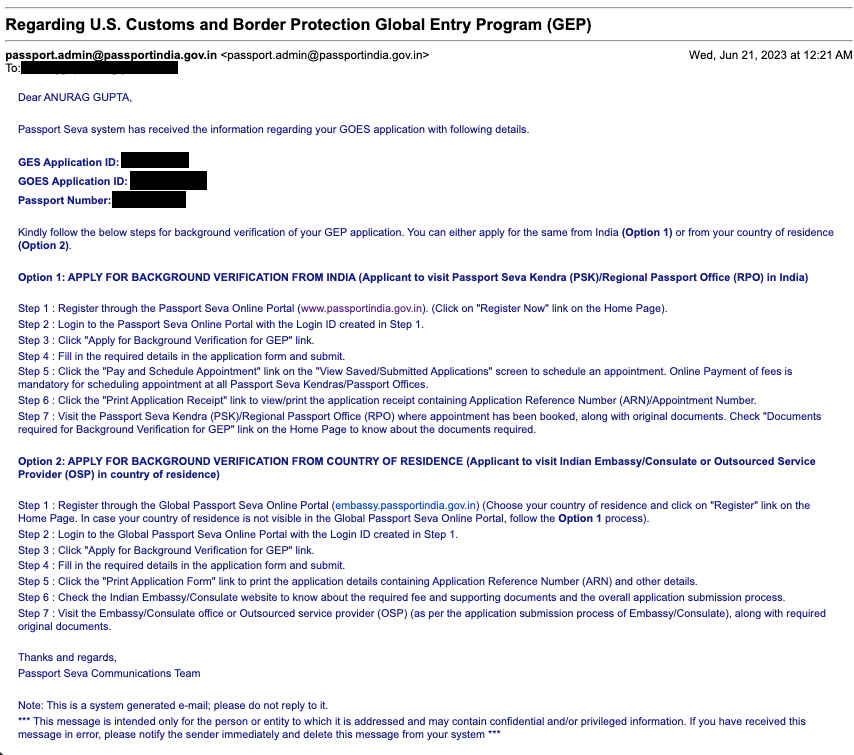
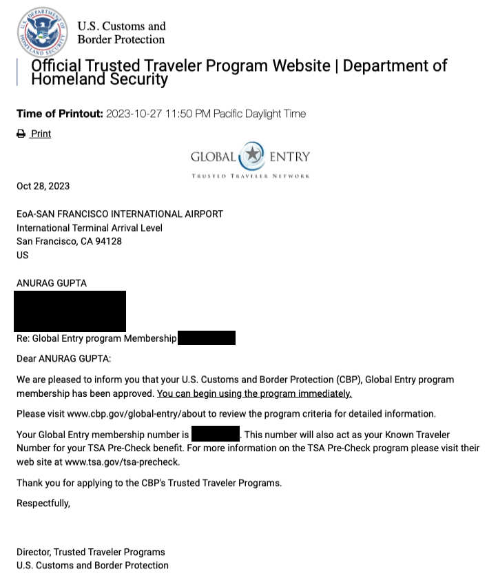

Global Entry Program (GEP) Application for Indian Citizens
Overview
The Global Entry program (GEP) facilitates faster immigration while entering U.S. Also, it comes with a complementary TSA Pre membership which allows faster security check with less hassle at major U.S. airports. I applied for the GEP using my F-1 visa and I completed my police verification in India in-person.
Application Timeline
19-Jun-2023: Submitted the GEP application online through the Department of Homeland Security website. 21-Jun-2023:Passport office in India received the information regarding my GEP application. Notification from passport office in India08-Aug-2023:PCC appointment at the passport office in Ballia. 12-Aug-2023: Visited local police station in Lucknow for verification. 25-Oct-2023: GEP application conditionally approved. 27-Oct-2023: In-person interview with a CBP official at San Francisco airport (on arrival). Received an approval email immediately after the interview.
Global Entry Program approval letter
Remarks
It is mandatory to finish the PCC appointment within 3 months from the date of notification from passport office in India.
I had applied for GEP with my old passport and scheduled the PCC appointment with my new passport. This led to slight trouble at the passport office. Fortunately, the officer in Ballia was helpful in updating the new passport details.
The delay between 21-Jun-2023 to 08-Aug-2023 was due to my travel plans outside India.
I scheduled the PCC appointment in Ballia as appoinment dates in Lucknow were available after two weeks. I had to visit a relative in Ballia otherwise I would have scheduled the appointment in Kanpur.
After police verification in Lucknow, there was no further update on the PSK or the CBP website. I only received a notification from CBP when I was conditionally approved.